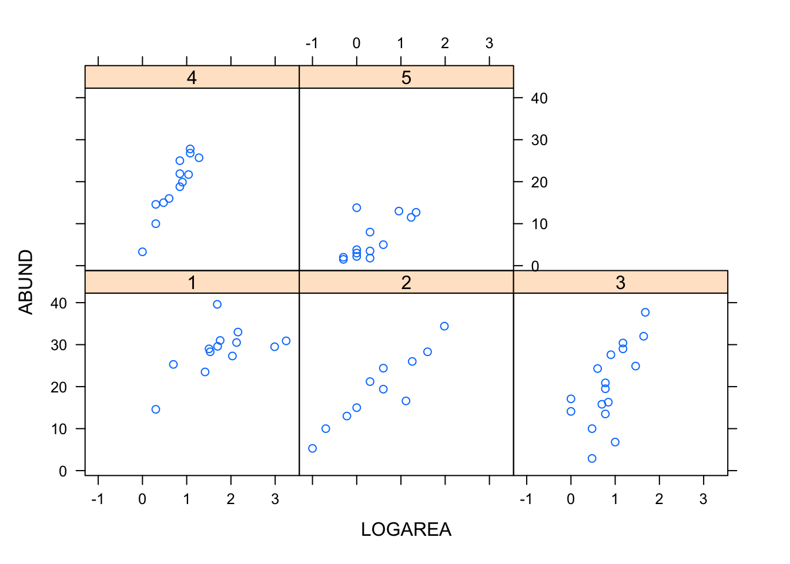
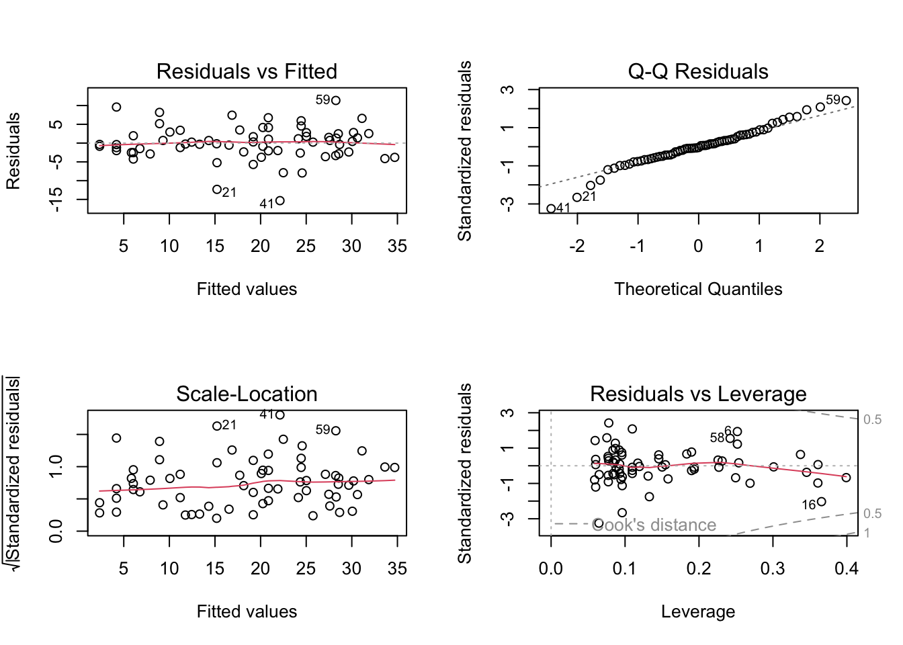

Exercise Solutions
A linear model with interaction between continuous and categorical predictors (= explanatory variables)
This exercise builds on the linear model with one continuous predictor, and the linear model with one categorical predictor, by adding these two sources of variation in the same model and allowing their effects to interact (i.e., the effect of one predictor changes with the value of the other predictor). It is the third of four complementary exercises, based on the loyn data set.
1. As in previous exercises, either create a new R script (perhaps call it linear_model_3) or continue with your previous R script in your RStudio Project. Again, make sure you include any metadata you feel is appropriate (title, description of task, date of creation etc) and don’t forget to comment out your metadata with a # at the beginning of the line.
2. Import the data file ‘loyn.txt’ into R and take a look at the structure of this dataframe using the str() function. We know that the abundance of birds ABUND increases quickly with the area of the patch LOGAREA, and more slowly for the larger patches (a saturating “log-linear relationship”). We now also know that bird abundance changes in a non-linear way with the grazing intensity FGRAZE. But how do these effects combine together? Would a small patch with low grazing intensity have more birds than a larger patch with high grazing intensity? Could the (poor) fit of the ABUND ~ LOGAREA model for the large patches be improved, if we accounted for grazing intensity in the patches?
loyn <- read.table("./data/loyn.txt", header = TRUE)
str(loyn)
## 'data.frame': 56 obs. of 8 variables:
## $ Site : int 1 2 3 4 5 6 7 8 9 10 ...
## $ ABUND : num 5.3 2 1.5 17.1 13.8 14.1 3.8 2.2 3.3 3 ...
## $ AREA : num 0.1 0.5 0.5 1 1 1 1 1 1 1 ...
## $ DIST : int 39 234 104 66 246 234 467 284 156 311 ...
## $ LDIST : int 39 234 311 66 246 285 467 1829 156 571 ...
## $ YR.ISOL: int 1968 1920 1900 1966 1918 1965 1955 1920 1965 1900 ...
## $ GRAZE : int 2 5 5 3 5 3 5 5 4 5 ...
## $ ALT : int 160 60 140 160 140 130 90 60 130 130 ...
3. As previously we want to treat AREA as a log-transformed area to limit the influence of the few disproportionately large patches, and GRAZE as a categorical variable with five levels. So the first thing we need to do is create the corresponding variables in the loyn dataframe, called LOGAREA and FGRAZE.
loyn$LOGAREA <- log10(loyn$AREA)
# create factor GRAZE as it was originally coded as an integer
loyn$FGRAZE <- factor(loyn$GRAZE)
4. Explore the relationship between grazing and patch area, using a scatterplot. You could explore the joint effect of FGRAZE and LOGAREA on ABUND, using panel plots. Hint: See the function coplot in the Data exploration lecture slide 24, and/or the help page for coplot. Factor levels increase from the bottom-left panel to the top-right panel. What pattern do you see? Is it okay to assume the effect of LOGAREA to be the same for all grazing levels? This is effectively asking if we should let the slope of LOGAREA vary across FGRAZE levels, which is the definition of an interaction.
coplot(ABUND ~ LOGAREA | FGRAZE, data = loyn)
# or
library(lattice)
xyplot(ABUND ~ LOGAREA | FGRAZE, data = loyn)
# There is a lot of variation in there, but:
# The mean abundance seems to decrease as grazing levels increase.
# This is most noticeable in the highest grazing level.
# Within a grazing level, abundance seems to increase with the log-patch area.
# It is unclear from this if the slope of the log-area effect is
# different between grazing levels
5. Fit an appropriate linear model in R to explain the variation in the response variable, ABUND with the explanatory variables LOGAREA and FGRAZE acting interactively. Hint: * is the interaction symbol! Remember to use the data = argument. Assign this linear model to an appropriately named object, like birds.inter.1.
birds.inter.1 <- lm(ABUND ~ FGRAZE * LOGAREA , data = loyn)
6. Let’s first check the assumptions of your linear model by creating plots of the residuals from the model. Remember, that you can split your plotting device into 2 rows and 2 columns using the par() function before you create the plots. Check each of the assumptions using these plots and report whether your model meets these assumptions.
# first split the plotting device into 2 rows and 2 columns
par(mfrow = c(2,2))
# now create the residuals plots
plot(birds.inter.1)
# To test the normality of residuals assumption we use the Normal Q-Q plot.
# The central residuals are not too far from the Q-Q line but the extremes
# are too extreme (the tails of the distribution are too long). Some
# observations, both high and low, are poorly explained by the model.
# The plot of the residuals against the fitted values suggests these
# extreme residuals happen for intermediate fitted values.
# Looking at the homogeneity of variance assumption (Residuals vs
# Fitted and Scale-Location plot),
# the graphs are mostly messy, with no clear pattern emerging. There is
# a hint of smaller variance with the lowest fitted values, which is not ideal.
# This could mean that the homogeneity of variance assumption is not met
# (i.e. the variances are not the same), but with this amount of data we
# can't tell. ABUND being bounded by zero, it wouldn't be too
# surprising that the variance increases with the mean abundance.
# The observations with the highest leverage don't appear to be overly
# influential, according to the Cook's distances in the Residuals vs
# Leverage plot.
7. Use the summary() function on the first model object to produce the table of parameter estimates. Using this output, take each line in turn and answer the following questions: (A) what does this parameter measure, specifically? (B) What is the biological interpretation of the corresponding estimate? (C) What is the null hypothesis associated with it? (D) Do you reject or fail to reject this hypothesis? I encourage you to get someone to discuss your answers with you.
summary(birds.inter.1)
##
## Call:
## lm(formula = ABUND ~ FGRAZE * LOGAREA, data = loyn)
##
## Residuals:
## Min 1Q Median 3Q Max
## -16.3615 -2.3807 -0.2449 2.6181 11.3529
##
## Coefficients:
## Estimate Std. Error t value Pr(>|t|)
## (Intercept) 21.243 3.987 5.329 2.89e-06 ***
## FGRAZE2 -6.165 4.842 -1.273 0.209285
## FGRAZE3 -7.215 4.820 -1.497 0.141271
## FGRAZE4 -17.910 6.701 -2.673 0.010375 *
## FGRAZE5 -17.043 4.406 -3.868 0.000344 ***
## LOGAREA 4.144 2.057 2.014 0.049843 *
## FGRAZE2:LOGAREA 4.368 3.108 1.405 0.166593
## FGRAZE3:LOGAREA 4.989 3.531 1.413 0.164374
## FGRAZE4:LOGAREA 15.235 5.925 2.572 0.013422 *
## FGRAZE5:LOGAREA 1.996 3.650 0.547 0.587148
## ---
## Signif. codes: 0 '***' 0.001 '**' 0.01 '*' 0.05 '.' 0.1 ' ' 1
##
## Residual standard error: 5.666 on 46 degrees of freedom
## Multiple R-squared: 0.767, Adjusted R-squared: 0.7214
## F-statistic: 16.83 on 9 and 46 DF, p-value: 8.05e-12
# Here the intercept (baseline) is the predicted `ABUND` for LOGAREA = 0,
# for FGRAZE level 1.
# the null hypothesis for the intercept is that the intercept = 0
# (not biologically relevant).
# LOGAREA represents the slope for LOGAREA, specific to level FGRAZE = 1.
# The null hypothesis is that the slope of the relationship
# between LOGAREA and ABUND = 0, for level FGRAZE = 1 only.
# FGRAZE2...5 estimate differences (contrasts) between the *intercept* of
# each level and the *intercept* of the reference level, FGRAZE = 1.
# FGRAZE2...5:LOGAREA estimate differences (contrasts) between the *slope*
# of LOGAREA for each level and the *slope* of LOGAREA for the reference
# level, FGRAZE = 1.
# The Multiple R-square value is 0.76, so 76% of the variation in the data is explained by the model.
8. Let’s now plot the predictions of your initial model to figure out how it really fits the data. Here’s a recipe, using the predict() function.
- plot the raw data, using a different colour per
FGRAZElevel - for each
FGRAZElevel in turn, - create a sequence of
LOGAREAfrom the minimum value to the maximum within the grazing level (unless you wish to predict outside the range of observed values) - store it in a data frame (e.g.
dat4pred) containing the variablesFGRAZEandLOGAREA.Remember thatFGRAZEis a factor, so its values require double quotes. - add a predicted column containing the predictions of the model for the new data frame, using
predict() - plot the predictions with the appropriate colours
See the script below, for one of many ways of doing this.
par(mfrow= c(1, 1))
plot(ABUND ~ LOGAREA, data= loyn, col= GRAZE, pch= 16)
# Note: # color 1 means black in R
# color 2 means red in R
# color 3 means green in R
# color 4 means blue in R
# color 5 means cyan in R
# FGRAZE1
# create a sequence of increasing Biomass within the observed range
LOGAREA.seq<- seq(from= min(loyn$LOGAREA[loyn$FGRAZE == 1]),
to= max(loyn$LOGAREA[loyn$FGRAZE == 1]),
length= 20)
# create data frame for prediction
dat4pred<- data.frame(FGRAZE= "1", LOGAREA= LOGAREA.seq)
# predict for new data
dat4pred$predicted<- predict(birds.inter.1, newdata= dat4pred)
# add the predictions to the plot of the data
lines(predicted ~ LOGAREA, data= dat4pred, col= 1, lwd= 2)
# FGRAZE2
LOGAREA.seq<- seq(from= min(loyn$LOGAREA[loyn$FGRAZE == 2]),
to= max(loyn$LOGAREA[loyn$FGRAZE == 2]),
length= 20)
dat4pred<- data.frame(FGRAZE= "2", LOGAREA= LOGAREA.seq)
dat4pred$predicted<- predict(birds.inter.1, newdata= dat4pred)
lines(predicted ~ LOGAREA, data= dat4pred, col= 2, lwd= 2)
# FGRAZE3
LOGAREA.seq<- seq(from= min(loyn$LOGAREA[loyn$FGRAZE == 3]),
to= max(loyn$LOGAREA[loyn$FGRAZE == 3]),
length= 20)
dat4pred<- data.frame(FGRAZE= "3", LOGAREA= LOGAREA.seq)
dat4pred$predicted<- predict(birds.inter.1, newdata= dat4pred)
lines(predicted ~ LOGAREA, data= dat4pred, col= 3, lwd= 2)
# FGRAZE4
LOGAREA.seq<- seq(from= min(loyn$LOGAREA[loyn$FGRAZE == 4]),
to= max(loyn$LOGAREA[loyn$FGRAZE == 4]),
length= 20)
dat4pred<- data.frame(FGRAZE= "4", LOGAREA= LOGAREA.seq)
dat4pred$predicted<- predict(birds.inter.1, newdata= dat4pred)
lines(predicted ~ LOGAREA, data= dat4pred, col= 4, lwd= 2)
# FGRAZE5
LOGAREA.seq<- seq(from= min(loyn$LOGAREA[loyn$FGRAZE == 5]),
to= max(loyn$LOGAREA[loyn$FGRAZE == 5]),
length= 20)
dat4pred<- data.frame(FGRAZE= "5", LOGAREA= LOGAREA.seq)
dat4pred$predicted<- predict(birds.inter.1, newdata= dat4pred)
lines(predicted ~ LOGAREA, data= dat4pred, col= 5, lwd= 2)
legend("topleft",
legend= paste("Graze = ", 5:1),
col= c(5:1), bty= "n",
lty= c(1, 1, 1),
lwd= c(1, 1, 1))
(Optional, for the geeks) Alternative method, using a loop:
# Okay, that was a long-winded way of doing this.
# If, like me, you prefer more compact code and less risks of errors,
# you can use a loop, to save repeating the sequence 5 times:
par(mfrow= c(1, 1))
plot(ABUND ~ LOGAREA, data= loyn, col= GRAZE, pch= 16)
for(g in levels(loyn$FGRAZE)){# `g` will take the values "1", "2",..., "5" in turn
LOGAREA.seq<- seq(from= min(loyn$LOGAREA[loyn$FGRAZE == g]),
to= max(loyn$LOGAREA[loyn$FGRAZE == g]),
length= 20)
dat4pred<- data.frame(FGRAZE= g, LOGAREA= LOGAREA.seq)
dat4pred$predicted<- predict(birds.inter.1, newdata= dat4pred)
lines(predicted ~ LOGAREA, data= dat4pred, col= as.numeric(g), lwd= 2)
}
legend("topleft",
legend= paste("Graze = ", 5:1),
col= c(5:1), bty= "n",
lty= c(1, 1, 1),
lwd= c(1, 1, 1))
Take some time to observe the predictions from the model, and how the lines have different intercepts and slopes (as assumed by the model with interactive effects).
9. From a biological point of view, what have we learned so far from the interactive model? (Assume that the assumptions are adequately met, for now). Do you think the model is biologically plausible? Is it supported statistically?
# INTERACTIVE MODEL
# The slopes of the LOGAREA effect across grazing levels are all over the
# place, without any coherent pattern (for instance, they could have been
# increasing or decreasing gradually from low to high grazing intensity).
# From a model like this, it appears that abundance is broadly increasing
# with patch size, however it is challenging to learn anything general
# about the nature of the relationships between birds, in relation to
# patch size and grazing.
# The interaction is non-significant, so isn't supported statistically either.
# Time to revert to a simpler, or an altogether different model?
# More on this in the next exercise!
# Some observations are poorly predicted (fitted) using the current set
# of predictors.
End of the Linear model with interactive continuous and categorical predictors exercise